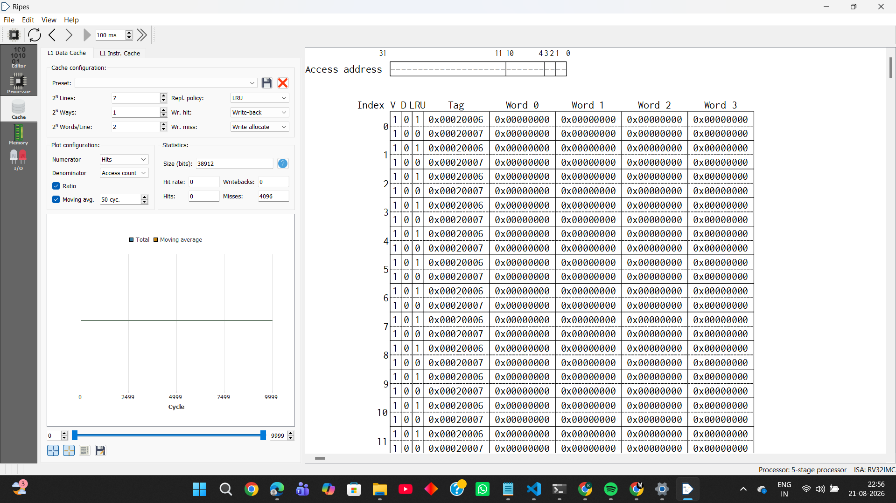
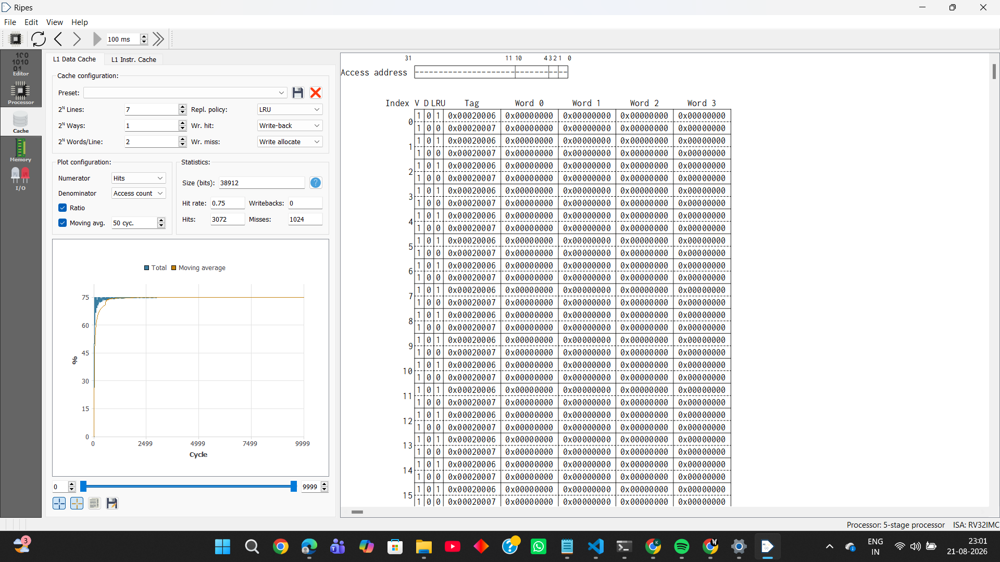

Domain: Embedded Systems & Security
A Verilog arithmetic core, satellite navigation decoders, cache simulation, and encryption small enough to run on a microcontroller. Most of this started with a problem I couldn't look up the answer to.
I wrote a Reed–Solomon erasure decoder in C++ at ISRO, then wanted to know what the arithmetic underneath it looks like in hardware. This is that: gf_mul, gf_inv and gf_mac as synthesizable RTL, checked against the original C++ as golden reference. It is the arithmetic layer a decoder sits on, not the decoder itself. Two multiplier microarchitectures went in so I could compare them, and the comparison turned out to be the interesting part.
If two programs do identical work, the same instructions and the same reads and writes, but visit memory in a different order, how much can that order alone change the speed? I wrote pairs of RV32IM programs where only the access order differs, ran every one in Ripes on a 5-stage RV32IMC core, and read the hit rate straight off the simulator. Two source-level changes to a 64×64 matrix multiply took the miss rate from 51.5% to 4.3%. Presented as a class tutorial with Kartik Mangal.


Ten weeks at ISRO's Space Applications Centre, in the division that builds GNSS and NavIC receivers. The project was a real-time, multi-protocol decoding utility that ingests a multiplexed stream from a network socket carrying three interleaved components: raw RTCM hex payloads, Galileo HAS pages from the E6-B signal, and Time-of-Transfer epoch metadata. The utility tokenizes and routes each component down its own pipeline; native RTCM is converted from hex back to binary and forwarded directly, while HAS pages are reassembled and passed through a Reed–Solomon erasure decoder over GF(256) to recover Precise Point Positioning corrections, which are then re-encoded as standard RTCM 3.x messages on an independent output port. Built in C and then C++ under a pre-C++11 compiler constraint, and validated end-to-end in RTKLIB's RTKNAVI to achieve centimetre-level positioning.
CreateThread for concurrencyFour ciphers, one question: which of these can a sensor node actually afford to run? I benchmarked DES, AES-GCM, ASCON and ECC under identical conditions. Each algorithm was benchmarked across total execution time and per-operation latency on identical hardware. ASCON, the NIST-selected lightweight cryptography standard, demonstrated a 78× speed advantage over AES-GCM and a 12× advantage over DES, directly validating its design intent for IoT edge devices. ECC was evaluated separately as an asymmetric key exchange primitive.
| Algorithm | Total Time (1000 ops) | Per-Op Latency | Category |
|---|---|---|---|
| DES | 0.19853 s | 0.0397 ms | Legacy |
| AES-GCM | 1.24794 s | 0.2496 ms | Standard |
| ASCON (C impl.) | 0.01611 s | 0.0032 ms 78× faster than AES | Lightweight |
| ECC Handshake | 0.00845 s | N/A | Key Exchange |
A GPS tracker where the location never travels in the clear. An ESP32 reads GPS coordinates via TinyGPS++ over UART2, serializes them to JSON, encrypts with AES-128 (mbedTLS), and publishes the hex ciphertext over MQTT. A Python subscriber decrypts each message and automatically opens the live location in Google Maps. Validated at Nirma University (23°07'44.5"N, 72°32'31.9"E); confirming correct GPS acquisition, encryption, MQTT transport, and decryption across the full pipeline.
{"lat":23.129021,"lon":72.542191}kush/esp32/gps_encrypted on HiveMQ broker every 3 secondswebbrowser.open(google.com/maps?q=lat,lon)A surveillance system that runs the whole chain itself: camera to detection to database to dashboard, with nothing rented from a cloud vendor except optional telemetry. A Raspberry Pi 3B captures over the CSI bus, detects motion, streams MJPEG over authenticated HTTP, logs sessions to SQLite, and serves a live Flask dashboard. The interesting part was finding out what a Pi 3 will and will not do. Built with Vasu Mistry, Nabh Sinha and Parth Kothari.
cv2.dnn.readNetFromONNX. The model ran, but inference was slow enough to stall the MJPEG stream, so deep learning stayed on the laptopmultipart/x-mixed-replace with HTTP Basic Auth; failed attempts logged to a viewer_log table with client IPMicroarchitectural simulation study using gem5 v25.1 on an X86 TimingSimpleCPU, run with Mitanshu Patel, comparing cache sensitivity across two fundamentally different workloads: a 100×100 matrix multiplication (~40kB working set, memory-intensive) and an AES SubBytes encryption benchmark (150kB payload, non-linear S-Box lookups). Four experiments: cache capacity (4kB→64kB) on each workload, associativity (1-way→8-way) at fixed 16kB, and finally L2 capacity and L1 line size at fixed 16kB. The key finding is that cache optimization is strictly workload-dependent: matrix multiplication responds dramatically to both capacity and associativity, while AES is almost entirely insensitive to cache scaling.
A small monitoring tool in two halves, each written in the language that suited it. Built with Mitanshu Patel. The Bash module (collector.sh) interfaces directly with Linux kernel utilities (top, free, df) via command substitution and pipelines, extracting CPU, memory, disk, and failed login metrics into a timestamped CSV, scheduled via cron for fully automated collection. The Python module (detector.py) parses the CSV with pandas, computes a statistical baseline (µ and σ) from historical data, and raises anomaly alerts when readings breach the dynamic µ+2σ threshold, dispatching automated email alerts via smtplib. Validated by CPU stress-testing with background loop processes that successfully triggered the threshold breach and alert pipeline.
A survey of the wireless technologies IoT deployments actually choose between, with smart agriculture as the worked example. Written with Mitanshu Patel and Krish Patel. The paper classifies IoT wireless technologies into three tiers, short-range (BLE, Zigbee, Wi-Fi), medium-range (LTE, 5G), and long-range LPWANs (LoRaWAN, Sigfox): and analyses each as a deliberate trade-off among the IoT design triangle of range, data rate, and battery life. Communication fundamentals covered include Shannon-Hartley capacity, CSS and GFSK modulation, FEC coding, DSSS/FHSS spread spectrum, and ALOHA vs CSMA/CA channel access for dense IoT deployments.